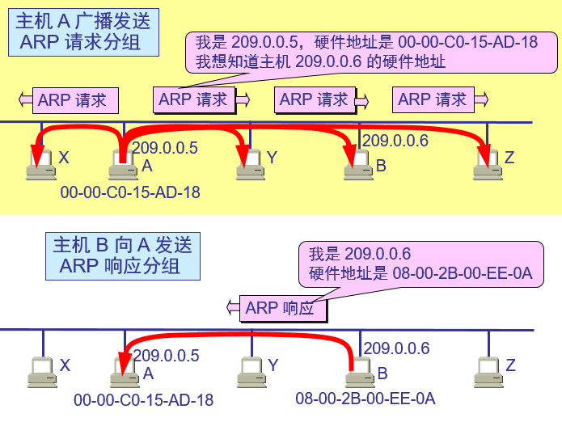

MAC地址：也称LAN地址、物理地址，对大多数局域网，MAC地址长度为6字节，共计2的48次方个可能的地址，通常用十六进制表示法，IEEE管理者MAC地址的分配。
当适配器收到一个帧时，将检查该帧中的目的MAC地址是否与自己的MAC地址匹配，如果匹配，该适配器提取出分装的数据报，并将该数据报沿协议栈向上传递。如果不
匹配，该适配器丢弃该帧，不向上传递该数据报。
有时发送适配器的确要让局域网上所有的其他适配器来收到并处理它打算发送的帧。发送适配器在该帧的目的地址字段中插入一个特殊的MAC广播地址。对于使用6字节的局域网，广播地址是48个
连续的1组成的字符串（十六进制：FF-FF-FF-FF-FF-FF）
ARP地址解析协议：网络层地址和链路层地址之间转换；ARP只为在同一个子网上的主机和路由器接口解析IP地址。
每一个主机都设有一个 ARP 高速缓存(ARP cache)，里面有所在的局域网上的各主机和路由器的 IP 地址到硬件地址的映射表。
当主机 A 欲向本局域网上的某个主机 B 发送 IP 数据报时，就先在其 ARP 高速缓存中查看有无主机 B 的 IP 地址。如有，就可查出其对应的硬件地址，再将此硬件地址写入 MAC 帧，然后通过局域网将该 MAC 帧发往此硬件地址。

为了减少网络上的通信量，主机 A 在发送其 ARP 请求分组时，就将自己的 IP 地址到硬件地址的映射写入 ARP 请求分组。
当主机 B 收到 A 的 ARP 请求分组时，就将主机 A 的这一地址映射写入主机 B 自己的 ARP 高速缓存中。这对主机 B 以后向 A 发送数据报时就更方便了。
ARP 是解决同一个局域网上的主机或路由器的 IP 地址和硬件地址的映射问题。
如果所要找的主机和源主机不在同一个局域网上，那么就要通过 ARP 找到一个位于本局域网上的某个路由器的硬件地址，然后把分组发送给这个路由器，让这个路由器把分组转发给下一个网络。剩下的工作就由下一个网络来做。
从IP地址到硬件地址的解析是自动进行的，主机的用户对这种地址解析过程是不知道的。
只要主机或路由器要和本网络上的另一个已知 IP 地址的主机或路由器进行通信，ARP 协议就会自动地将该 IP 地址解析为链路层所需要的硬件地址。
使用 ARP 的四种典型情况
发送方是主机，要把IP数据报发送到本网络上的另一个主机。这时用 ARP 找到目的主机的硬件地址。
发送方是主机，要把 IP 数据报发送到另一个网络上的一个主机。这时用 ARP 找到本网络上的一个路由器的硬件地址。剩下的工作由这个路由器来完成。
发送方是路由器，要把 IP 数据报转发到本网络上的一个主机。这时用 ARP 找到目的主机的硬件地址。
发送方是路由器，要把 IP 数据报转发到另一个网络上的一个主机。这时用 ARP 找到本网络上另一个路由器的硬件地址。剩下的工作由这个路由器来完成。